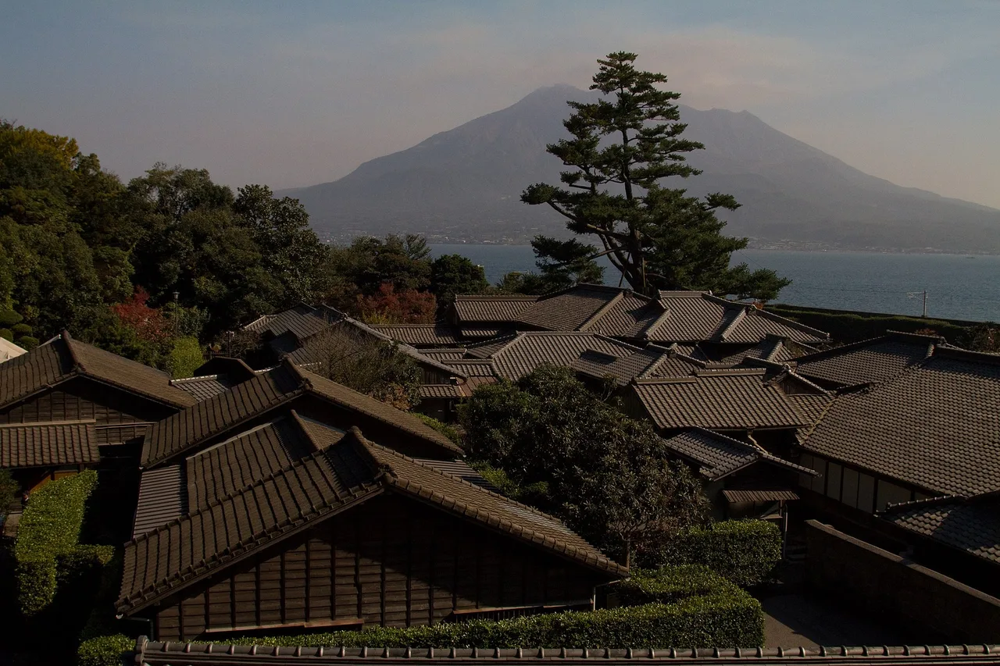

Kagoshima Travel Guide for Japanese Learners
An active volcano across the bay and a gateway to ancient-forest islands.

Kagoshima sits beneath the smoking Sakurajima volcano, often called the 'Naples of the East'. It's the jumping-off point for the cedar-forest island of Yakushima.
History & background
Kagoshima (鹿児島) was the Satsuma (薩摩) domain that helped topple the shogunate; its lord's villa garden, Sengan-en (仙巌園), frames the smoking Sakurajima (桜島) volcano across the bay.
What to see
- Sakurajima volcano
- Sengan-en garden
- Yakushima ancient cedar forest (UNESCO)
- Ibusuki sand baths
Hidden gems
- Kinko Bay kayaking offers serene paddling among volcanic islands with views of Sakurajima's daily eruptions from the water.
- Chiran samurai village preserves seven original samurai mansions and gardens in a quiet hilltop town south of the city.
- Ōkuchi Falls plunges 25 meters through lush forest on Yakushima's lesser-hiked western trails, rarely crowded even in peak season.
Some links above are affiliate links. We may earn a commission at no extra cost to you. We only list services we'd use ourselves.
What to eat
Kurobuta (black pork) and satsuma-age fish cakes.
Getting there & when to go
Getting there: Kagoshima is ~1h40m from Fukuoka by Kyūshū Shinkansen, or by air.
Best time: Spring–autumn for Yakushima hiking; any season for the city and onsen.
When to go — season by season
Spring through autumn suit Yakushima's (屋久島) ancient forest hikes (it's one of Japan's wettest places). The city and sand baths are pleasant year-round.
Local culture
Kagoshima has a strong pottery tradition rooted in Satsuma ware—you'll see glazed earthenware in local shops and restaurants. Many small studios in the outskirts offer hands-on experiences where you can shape clay yourself, connecting you to centuries of local craftsmanship that survived wars and cultural shifts.
Residents use the phrase 'Sakurajima ash' (桜島灰, sakurajima-bai) casually in daily conversation—it's both a weather complaint and cultural marker. The volcano erupts 300+ times yearly, and locals have adapted: parked cars stay dusty, laundry dries indoors, and ash-related jokes bind the community together in wry humor.
A suggested visit
Take the short ferry to active Sakurajima, stroll Sengan-en with its volcano view, then bury yourself in the natural hot sand baths at Ibusuki (指宿). Allow extra days for the cedar forests of Yakushima.
Seasonal tip: Visit Yakushima between June and early July to catch the brief alpine azalea bloom at higher elevations, but expect heavy rainfall and plan extra time for muddy trail conditions.
Local etiquette: At Ibusuki sand baths (砂むし温泉), workers will bury you in hot sand—it's normal to lie still and quiet for 10–15 minutes; avoid fidgeting or talking loudly, as others nearby are in meditative relaxation mode.
Try the Ibusuki sand baths — you're buried in naturally hot volcanic sand.
Some links above are affiliate links. We may earn a commission at no extra cost to you. We only list services we'd use ourselves.
Common questions
Q. How do I get to Yakushima from Kagoshima city?
A. Ferries depart from Kagoshima port to Yakushima in about 50 minutes. Book ahead in summer, as the UNESCO cedar-forest island draws crowds during peak hiking season (spring–autumn).
Q. Is it safe to visit with Sakurajima volcano so active?
A. Sakurajima erupts frequently but poses minimal risk to visitors in Kagoshima city across the bay. The volcano's dramatic views and ash are part of its 'Naples of the East' appeal; check local advisories before visiting.
Q. What's the best regional dish to try in Kagoshima?
A. Kurobuta (black pork) is the signature meat. Pair it with satsuma-age, local fish cakes. Both reflect Kagoshima's coastal and agricultural heritage and appear on most restaurant menus.